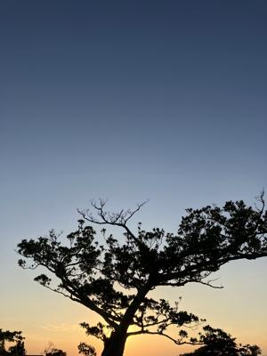

うるがいの話 ある日
最新: 翼をくださいの歌詞【うるがいの話 ある日】とは 一日だけのプログです
『うるがいの話』の最新一日だけのプログで、通信料が少なく経済的だ。カニの画像をクリックすると全ての日付が載る『うるがいの話』サイトを表示します
|
|
【うるがいの話】 うるがい(ｳﾙｶﾞｲ urugai)とは、『もずくがに』の名前でとても大きくなります。 |
|---|---|
|
|
【カミマヤーの話】 猫のことを方言でマヤーといいます。カミマヤー（kamimayaa）とは、神の猫のことです。 |
|
【たながぁの音楽】 たながぁ（ﾀﾅｶﾞｰ tanagaa）とは手長えびのことで、何種類かあり大きいのは車 エビぐらいになります。 |

|
【ぶながぁの話】 ぶながぁ(ﾌﾞﾅｶﾞｰ bunagaa)とは、赤い髪の毛、赤い身体、そして身長は１ｍ２０ｃｍ ぐらい、川の蟹を食べているの目撃された。場所は沖縄県国頭郡大宜味村のと ある村僕の隣近所に住んでいる爺さんから、聞いた話です。 |
|
|
【ギーマの話】 ギーマ(giima)とは、山原の里山に咲くスズランに似た、 花を付けます。実は食べられます、 気が付くと口の周りが紫になっています。 |
2023年10月18日 (水）翼をくださいの歌詞
18:11


歌詞のない楽譜を参考に、楽譜データを作成し、ネットの歌詞を参考に歌詞を
打ち込んでいると、あれ？、なんだかおかしい。
Yahoo!知恵袋より引用
翼をくださいの二番の歌詞の最初に
「今、富とか名誉ならばいらないけど翼がほしい」が無いバージョンと有るバ
ージョンの二通りがありますがどちらが本物ですか？
「翼をください」の歌詞は「今、富とか～」の部分があるバージョンと無いバ
ージョンのどちらが本物か、ということですが、どちらのバージョンも本物で
す。何故、二つのバージョンが出来たかというと、この曲の出自が関係してい
ます。元々、この曲は歌謡曲として作られました。この曲の作詞の段階では「
今、富とか～」の節も入れられていました。昭和４６（１９７１）年、この曲
をコーラスグループ「赤い鳥」が歌うことになりました。その「赤い鳥」が発
表したレコードには、どのような訳か、「今、富とか～」の節が入っていませ
んでした。そのため、最初に一般に流布したのは、「今、富とか～」の節が無
いバージョンということになります。テレビで放送される際は時間の関係から
専らこちらのバージョンが放送されたようです。ただし、「今、富とか～」の
節があるバージョンが全く歌われなかった訳ではありません。しかし、時間の
関係から全ては放送されず、代わりに「子供の時、夢見たこと～」の節が省略
されていることが多かったようです。数年後、とある作曲家が「今、富とか～
」と「子供の時、夢見たこと～」の全ての節を入れ、合唱曲に手直しをしたも
のを発表しました。この時から「翼をください」は合唱曲として扱われるよう
になりました。
つまり、合唱曲として広まったのが「今、富とか～」の節があるバージョン、
歌謡曲として広まったのが「今、富とか～」の節が無いバージョン、というこ
とになります。しかし、現在ではテレビで放送される際でも、全ての節が入っ
たバージョンが放送されることがあります。
ホー、私が、高校３年６組のホームルームの時、担任の先生に歌わされた歌詞
は、どうなのだろう。おそらく「今、富とか～」は無かったような気がする。
ホームルームの時間は限られていたから。
１６時１９分 ビットコインの総資産 ￥１２、３９７（↑１０７）